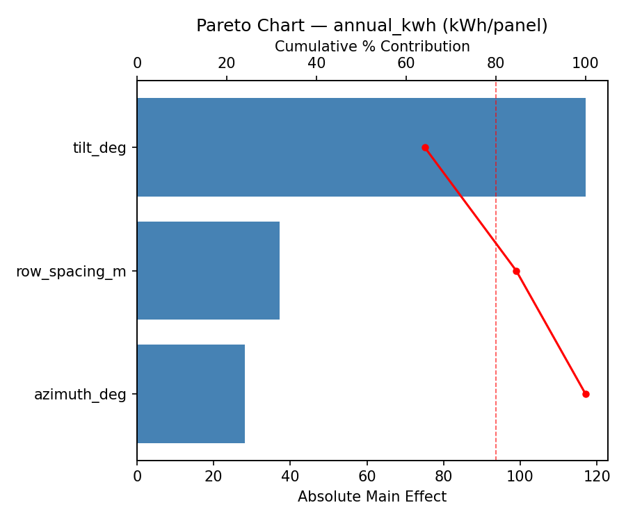
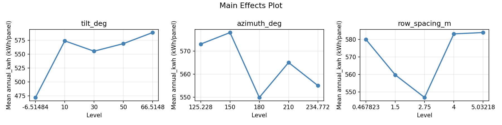
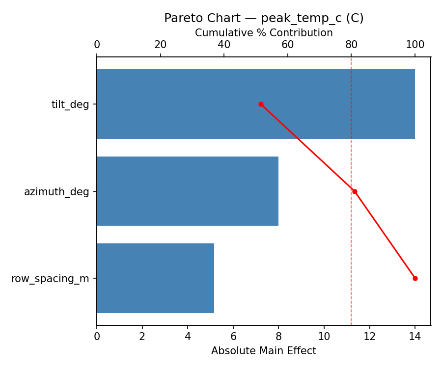
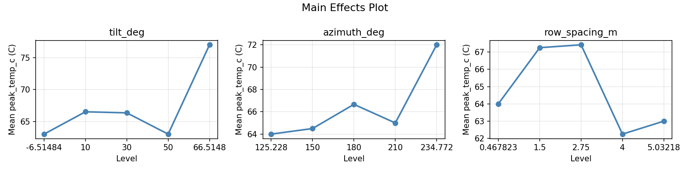
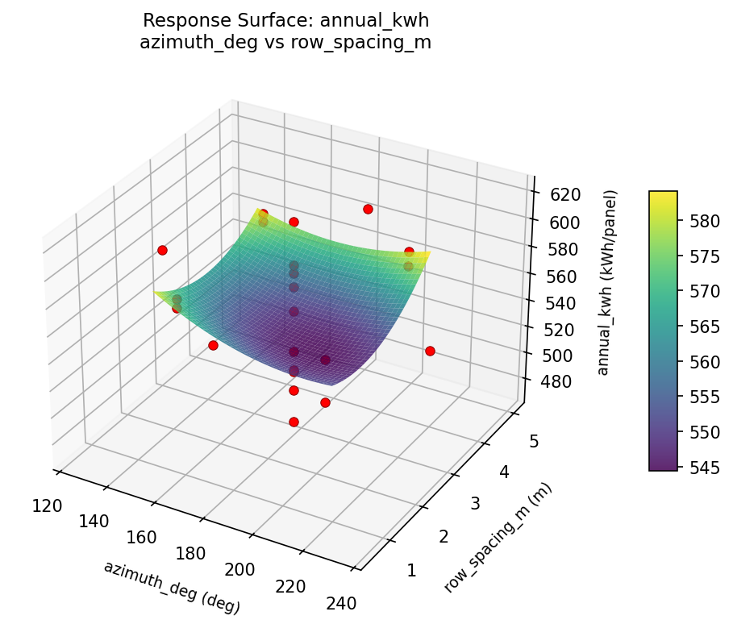
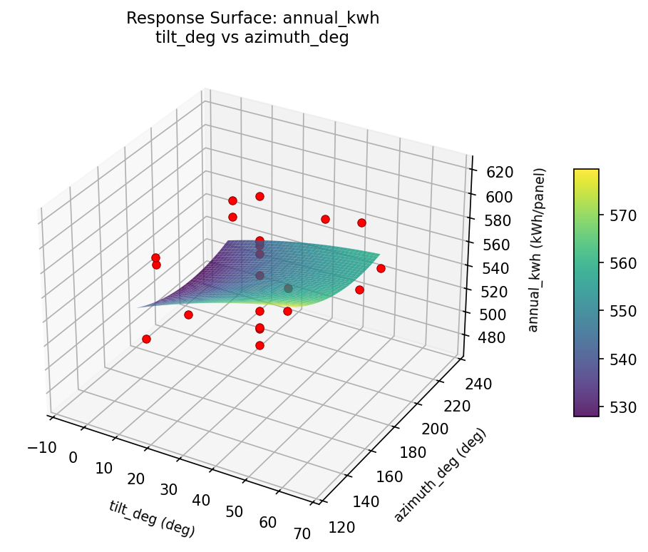
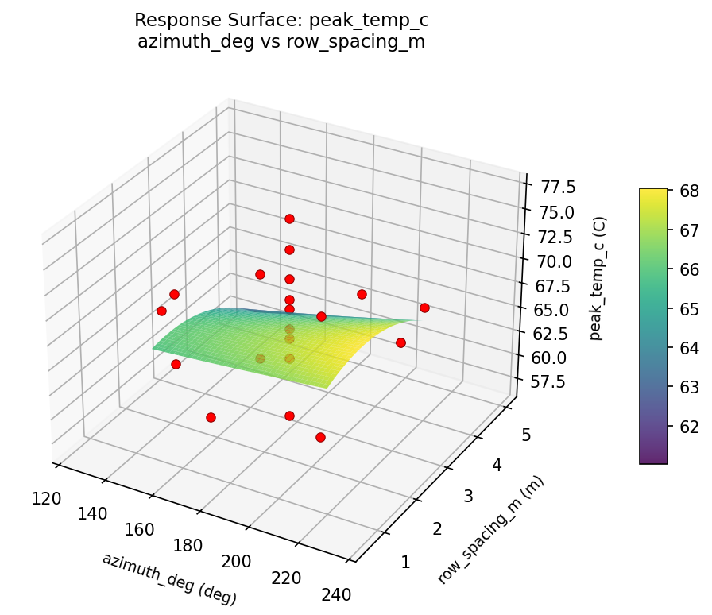
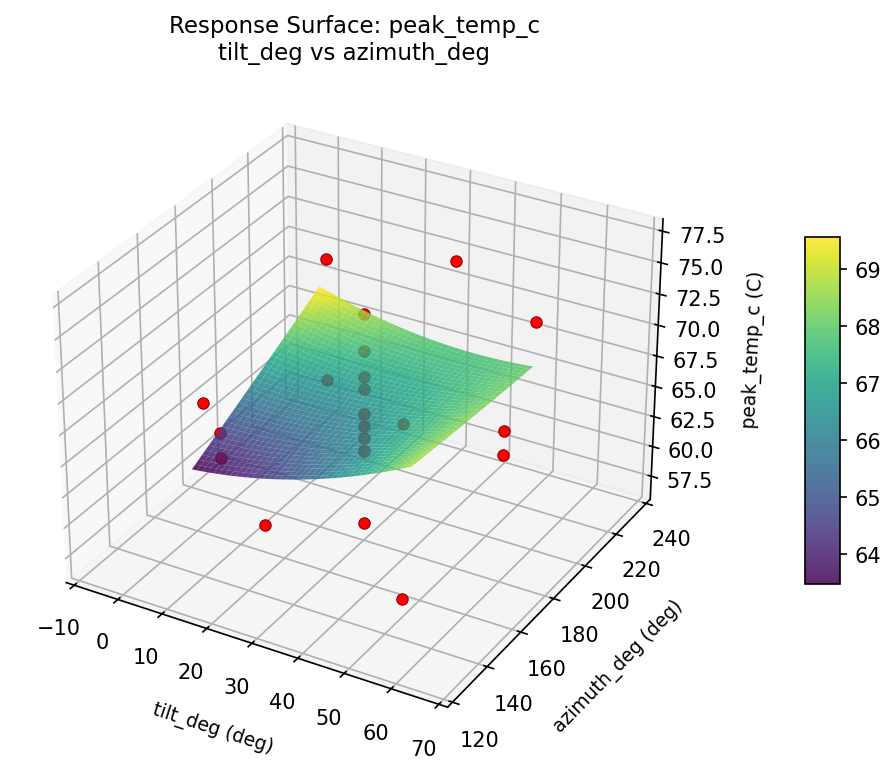
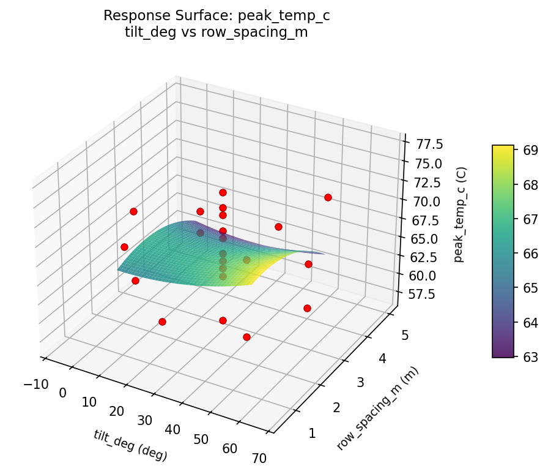

Summary
This experiment investigates solar panel tilt & orientation. Central composite design to maximize annual energy yield and minimize peak temperature by tuning tilt angle, azimuth, and row spacing.
The design varies 3 factors: tilt deg (deg), ranging from 10 to 50, azimuth deg (deg), ranging from 150 to 210, and row spacing m (m), ranging from 1.5 to 4.0. The goal is to optimize 2 responses: annual kwh (kWh/panel) (maximize) and peak temp c (C) (minimize). Fixed conditions held constant across all runs include latitude = 40N, panel watt = 400W.
A Central Composite Design (CCD) was selected to fit a full quadratic response surface model, including curvature and interaction effects. With 3 factors this produces 22 runs including center points and axial (star) points that extend beyond the factorial range.
Quadratic response surface models were fitted to capture potential curvature and factor interactions. The RSM contour plots below visualize how pairs of factors jointly affect each response.
Key Findings
For annual kwh, the most influential factors were tilt deg (64.2%), row spacing m (20.4%), azimuth deg (15.4%). The best observed value was 620.0 (at tilt deg = 30, azimuth deg = 180, row spacing m = 2.75).
For peak temp c, the most influential factors were tilt deg (51.5%), azimuth deg (29.4%), row spacing m (19.0%). The best observed value was 57.0 (at tilt deg = 10, azimuth deg = 150, row spacing m = 1.5).
Recommended Next Steps
- Run confirmation experiments at the predicted optimal settings to validate the model.
- Consider whether any fixed factors should be varied in a future study.
Experimental Setup
Factors
| Factor | Low | High | Unit |
|---|
tilt_deg | 10 | 50 | deg |
azimuth_deg | 150 | 210 | deg |
row_spacing_m | 1.5 | 4.0 | m |
Fixed: latitude = 40N, panel_watt = 400W
Responses
| Response | Direction | Unit |
|---|
annual_kwh | ↑ maximize | kWh/panel |
peak_temp_c | ↓ minimize | C |
Configuration
{
"metadata": {
"name": "Solar Panel Tilt & Orientation",
"description": "Central composite design to maximize annual energy yield and minimize peak temperature by tuning tilt angle, azimuth, and row spacing"
},
"factors": [
{
"name": "tilt_deg",
"levels": [
"10",
"50"
],
"type": "continuous",
"unit": "deg"
},
{
"name": "azimuth_deg",
"levels": [
"150",
"210"
],
"type": "continuous",
"unit": "deg"
},
{
"name": "row_spacing_m",
"levels": [
"1.5",
"4.0"
],
"type": "continuous",
"unit": "m"
}
],
"fixed_factors": {
"latitude": "40N",
"panel_watt": "400W"
},
"responses": [
{
"name": "annual_kwh",
"optimize": "maximize",
"unit": "kWh/panel"
},
{
"name": "peak_temp_c",
"optimize": "minimize",
"unit": "C"
}
],
"settings": {
"operation": "central_composite",
"test_script": "use_cases/127_solar_panel_tilt/sim.sh"
}
}
Experimental Matrix
The Central Composite Design produces 22 runs. Each row is one experiment with specific factor settings.
| Run | tilt_deg | azimuth_deg | row_spacing_m |
|---|
| 1 | 30 | 180 | 2.75 |
| 2 | 50 | 150 | 4 |
| 3 | 10 | 210 | 1.5 |
| 4 | 30 | 234.772 | 2.75 |
| 5 | 30 | 180 | 2.75 |
| 6 | -6.51484 | 180 | 2.75 |
| 7 | 30 | 180 | 0.467823 |
| 8 | 30 | 180 | 2.75 |
| 9 | 50 | 210 | 1.5 |
| 10 | 66.5148 | 180 | 2.75 |
| 11 | 30 | 180 | 2.75 |
| 12 | 30 | 125.228 | 2.75 |
| 13 | 30 | 180 | 2.75 |
| 14 | 10 | 150 | 4 |
| 15 | 30 | 180 | 2.75 |
| 16 | 50 | 150 | 1.5 |
| 17 | 30 | 180 | 5.03218 |
| 18 | 50 | 210 | 4 |
| 19 | 30 | 180 | 2.75 |
| 20 | 10 | 150 | 1.5 |
| 21 | 10 | 210 | 4 |
| 22 | 30 | 180 | 2.75 |
Step-by-Step Workflow
1
Preview the design
$ python doe.py info --config use_cases/127_solar_panel_tilt/config.json
2
Generate the runner script
$ python doe.py generate --config use_cases/127_solar_panel_tilt/config.json \
--output use_cases/127_solar_panel_tilt/results/run.sh --seed 42
3
Execute the experiments
$ bash use_cases/127_solar_panel_tilt/results/run.sh
4
Analyze results
$ python doe.py analyze --config use_cases/127_solar_panel_tilt/config.json
5
Get optimization recommendations
$ python doe.py optimize --config use_cases/127_solar_panel_tilt/config.json
6
Generate the HTML report
$ python doe.py report --config use_cases/127_solar_panel_tilt/config.json \
--output use_cases/127_solar_panel_tilt/results/report.html
Features Exercised
| Feature | Value |
|---|
| Design type | central_composite |
| Factor types | continuous (all 3) |
| Arg style | double-dash |
| Responses | 2 (annual_kwh ↑, peak_temp_c ↓) |
| Total runs | 22 |
Analysis Results
Generated from actual experiment runs using the DOE Helper Tool.
Response: annual_kwh
Top factors: tilt_deg (64.2%), row_spacing_m (20.4%), azimuth_deg (15.4%).
Pareto Chart

Main Effects Plot

Response: peak_temp_c
Top factors: tilt_deg (51.5%), azimuth_deg (29.4%), row_spacing_m (19.0%).
Pareto Chart

Main Effects Plot

Response Surface Plots
3D surfaces fitted with quadratic RSM. Red dots are observed data points.
annual kwh azimuth deg vs row spacing m

annual kwh tilt deg vs azimuth deg

annual kwh tilt deg vs row spacing m

peak temp c azimuth deg vs row spacing m

peak temp c tilt deg vs azimuth deg

peak temp c tilt deg vs row spacing m

Full Analysis Output
RSM surface: rsm_annual_kwh_tilt_deg_vs_azimuth_deg.png
RSM surface: rsm_annual_kwh_tilt_deg_vs_row_spacing_m.png
RSM surface: rsm_annual_kwh_azimuth_deg_vs_row_spacing_m.png
RSM surface: rsm_peak_temp_c_tilt_deg_vs_azimuth_deg.png
RSM surface: rsm_peak_temp_c_tilt_deg_vs_row_spacing_m.png
RSM surface: rsm_peak_temp_c_azimuth_deg_vs_row_spacing_m.png
=== Main Effects: annual_kwh ===
Factor Effect Std Error % Contribution
--------------------------------------------------------------
tilt_deg 117.0000 7.7320 64.2%
row_spacing_m 37.1667 7.7320 20.4%
azimuth_deg 28.1667 7.7320 15.4%
=== Summary Statistics: annual_kwh ===
tilt_deg:
Level N Mean Std Min Max
------------------------------------------------------------
-6.51484 1 472.0000 0.0000 472.0000 472.0000
10 4 574.0000 7.7460 563.0000 581.0000
30 12 555.4167 37.4929 496.0000 620.0000
50 4 569.0000 26.1661 532.0000 588.0000
66.5148 1 589.0000 0.0000 589.0000 589.0000
azimuth_deg:
Level N Mean Std Min Max
------------------------------------------------------------
125.228 1 573.0000 0.0000 573.0000 573.0000
150 4 578.0000 7.7460 569.0000 587.0000
180 12 549.8333 45.5927 472.0000 620.0000
210 4 565.0000 24.2625 532.0000 588.0000
234.772 1 555.0000 0.0000 555.0000 555.0000
row_spacing_m:
Level N Mean Std Min Max
------------------------------------------------------------
0.467823 1 580.0000 0.0000 580.0000 580.0000
1.5 4 559.7500 19.1377 532.0000 575.0000
2.75 12 546.8333 43.9459 472.0000 620.0000
4 4 583.2500 5.1881 577.0000 588.0000
5.03218 1 584.0000 0.0000 584.0000 584.0000
=== Main Effects: peak_temp_c ===
Factor Effect Std Error % Contribution
--------------------------------------------------------------
tilt_deg 14.0000 1.1183 51.5%
azimuth_deg 8.0000 1.1183 29.4%
row_spacing_m 5.1667 1.1183 19.0%
=== Summary Statistics: peak_temp_c ===
tilt_deg:
Level N Mean Std Min Max
------------------------------------------------------------
-6.51484 1 63.0000 0.0000 63.0000 63.0000
10 4 66.5000 4.5092 63.0000 73.0000
30 12 66.3333 4.7162 57.0000 74.0000
50 4 63.0000 5.8878 57.0000 71.0000
66.5148 1 77.0000 0.0000 77.0000 77.0000
azimuth_deg:
Level N Mean Std Min Max
------------------------------------------------------------
125.228 1 64.0000 0.0000 64.0000 64.0000
150 4 64.5000 5.8023 57.0000 71.0000
180 12 66.6667 5.4828 57.0000 77.0000
210 4 65.0000 5.4160 61.0000 73.0000
234.772 1 72.0000 0.0000 72.0000 72.0000
row_spacing_m:
Level N Mean Std Min Max
------------------------------------------------------------
0.467823 1 64.0000 0.0000 64.0000 64.0000
1.5 4 67.2500 5.6789 61.0000 73.0000
2.75 12 67.4167 5.5507 57.0000 77.0000
4 4 62.2500 3.7749 57.0000 66.0000
5.03218 1 63.0000 0.0000 63.0000 63.0000
Pareto chart (annual_kwh): use_cases/127_solar_panel_tilt/results/analysis/pareto_annual_kwh.png
Pareto chart (peak_temp_c): use_cases/127_solar_panel_tilt/results/analysis/pareto_peak_temp_c.png
Main effects (annual_kwh): use_cases/127_solar_panel_tilt/results/analysis/main_effects_annual_kwh.png
Main effects (peak_temp_c): use_cases/127_solar_panel_tilt/results/analysis/main_effects_peak_temp_c.png
Optimization Recommendations
=== Optimization: annual_kwh ===
Direction: maximize
Best observed run: #2
tilt_deg = 30
azimuth_deg = 180
row_spacing_m = 2.75
Value: 620.0
RSM Model (linear, R² = 0.2498, Adj R² = 0.1248):
Coefficients:
intercept +559.0000
tilt_deg -3.8719
azimuth_deg -8.0811
row_spacing_m -19.7536
RSM Model (quadratic, R² = 0.5331, Adj R² = 0.1829):
Coefficients:
intercept +571.5790
tilt_deg -3.8719
azimuth_deg -8.0811
row_spacing_m -19.7535
tilt_deg*azimuth_deg +11.2500
tilt_deg*row_spacing_m +8.0000
azimuth_deg*row_spacing_m -6.7500
tilt_deg^2 -0.4895
azimuth_deg^2 -1.2395
row_spacing_m^2 -17.1394
Curvature analysis:
row_spacing_m coef=-17.1394 concave (has a maximum)
azimuth_deg coef=-1.2395 concave (has a maximum)
tilt_deg coef=-0.4895 concave (has a maximum)
Notable interactions:
tilt_deg*azimuth_deg coef=+11.2500 (synergistic)
tilt_deg*row_spacing_m coef=+8.0000 (synergistic)
azimuth_deg*row_spacing_m coef=-6.7500 (antagonistic)
Predicted optimum (from quadratic model):
tilt_deg = 10
azimuth_deg = 150
row_spacing_m = 1.5
Predicted value: 596.9171
Model quality: Moderate fit — use predictions directionally, not precisely.
Factor importance:
1. row_spacing_m (effect: 78.9, contribution: 42.2%)
2. tilt_deg (effect: 56.2, contribution: 30.1%)
3. azimuth_deg (effect: 52.0, contribution: 27.8%)
=== Optimization: peak_temp_c ===
Direction: minimize
Best observed run: #17
tilt_deg = 10
azimuth_deg = 150
row_spacing_m = 1.5
Value: 57.0
RSM Model (linear, R² = 0.2844, Adj R² = 0.1651):
Coefficients:
intercept +66.0909
tilt_deg +3.1302
azimuth_deg -0.0119
row_spacing_m -1.1854
RSM Model (quadratic, R² = 0.4809, Adj R² = 0.0916):
Coefficients:
intercept +67.1699
tilt_deg +3.1302
azimuth_deg -0.0119
row_spacing_m -1.1854
tilt_deg*azimuth_deg -1.5000
tilt_deg*row_spacing_m -0.5000
azimuth_deg*row_spacing_m +1.2500
tilt_deg^2 +0.8605
azimuth_deg^2 -1.3895
row_spacing_m^2 -1.0895
Curvature analysis:
azimuth_deg coef=-1.3895 concave (has a maximum)
row_spacing_m coef=-1.0895 concave (has a maximum)
tilt_deg coef=+0.8605 convex (has a minimum)
Notable interactions:
tilt_deg*azimuth_deg coef=-1.5000 (antagonistic)
azimuth_deg*row_spacing_m coef=+1.2500 (synergistic)
tilt_deg*row_spacing_m coef=-0.5000 (antagonistic)
Predicted optimum (from linear model):
tilt_deg = 66.5148
azimuth_deg = 180
row_spacing_m = 2.75
Predicted value: 71.8058
Model quality: Weak fit — consider adding center points or using a different design.
Factor importance:
1. tilt_deg (effect: 15.2, contribution: 44.0%)
2. row_spacing_m (effect: 15.0, contribution: 43.3%)
3. azimuth_deg (effect: 4.4, contribution: 12.7%)